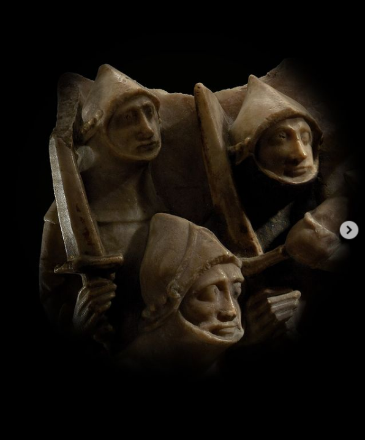

Today marks the 850th anniversary of the murder of #ThomasBecket, Archbishop of Canterbury.
The murder was committed in a side chapel of Canterbury Cathedral by a group of knights with close ties to King Henry II, and the atrocity sent shockwaves around medieval Europe.
Read about the murder that shook the Middle Ages in our curator’s blog post – link in bio.
Read more about our upcoming special exhibition on Becket’s life and legacy, opening April 2021, and sign up for updates to be the first to know when tickets go on sale at britishmuseum.org/becket
🔎 Alabaster sculpture showing the murder of Thomas Becket, about 1450, England.